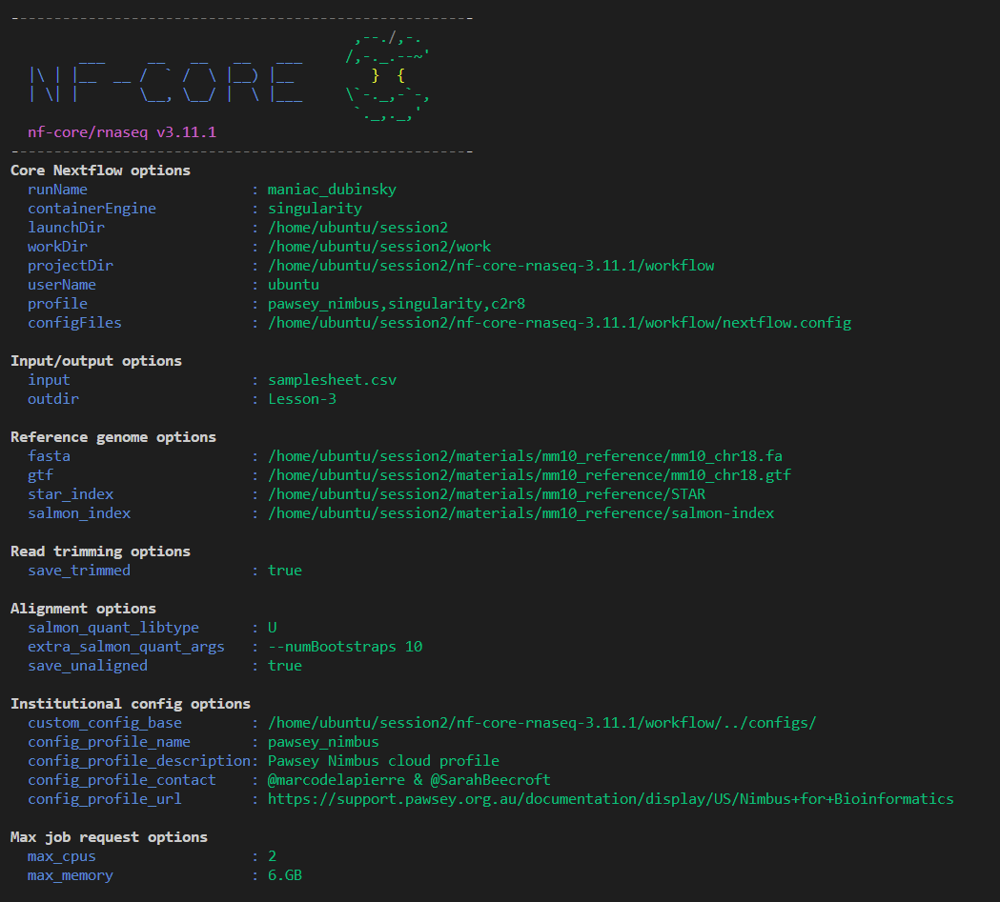

2.3. Configuring a run for your environment
- Understand formatting requirements of a config file
- Write a custom config file for your local environment that overwrites default workflow settings
- Run a workflow using the custom config file and appropriate Nextflow flag
- Use an alternative container source for a workflow process
Nextflow’s portability is enabled by its ability to separate workflow implementation from the configuration settings required to execute it. In this lesson we will use configuration files to define specifications required to execute an nf-core pipeline on our compute environment. While nf-core workflows are designed to be portable and work out of the box, sometimes you will need to customise the workflow’s configuration so that it can run on your environment. The nf-core developer community currently offer a number of ways to configure nf-core workflows.
2.3.1. Default nf-core configuration
Recall that when a main.nf file is run for any Nextflow workflow, Nextflow looks for configuration files in multiple locations to determine how to execute the workflow and its processes. One of the files Nextflow will always look for is nextflow.config. Currently, all nf-core workflows use a nextflow.config file and a conf/base.config file to define the default execution settings and parameters of a workflow.
Let’s take a look at the nf-core/rnaseq nextflow.config file:
cat nf-core-rnaseq-3.11.1/workflow/nextflow.config- What is the default aligner parameter being applied?
- What default max memory, cpu, and walltime resources have been specified?
- What config file is loaded by default for all nf-core workflows?
- Inside the Global default
params {}section, on line 58 of thenextflow.configunder// Alignment:
aligner = 'star_salmon'- Inside the Global default
params {}section, on lines 120-124 of thenextflow.configunder// Max resource options:
max_memory = '128.GB'
max_cpus = 16
max_time = '240.h'- Inside Global default
params {}section, on line 128 of thenextflow.configunder// Load base.config by default for all pipelines:
includeConfig 'conf/base.config'2.3.2. When to use a custom config file
There are a number of situations in which you may want to write a custom configuration file:
- To override the default resource allocations of the workflow specified in the
nextflow.config - To override the default resource allocations for a process specified in
conf/base.config - To use a different software installation method than those supported by nf-core
- To run a workflow on an HPC and interact with a job scheduler like PBSpro or SLURM
Using a custom configuration file is good practice to ensure that your pipeline runs efficiently and reproducibly on your compute environment. It also allows you to easily share the pipeline with others who can use your custom config file to run it in the same computational environment.
We will write a custom configuration file to override the default configurations of the workflow with those that are suitable for our Nimbus instances. We’re going to replace 3 flags in our run command with this file:
-profile singularity--max_memory 6.GB--max_cpus 2
Bioinformatics relies on large-scale computational infrastructures and has a signficant carbon footprint due to the energy required to run computational workflows. We can optimise our worklfows to not only reduce their runtime, but also adopt more sustainable computing practices. This paper makes for an interesting read about the carbon footprint of bioinformatics workflows and tools!
2.3.3. Customise resource configuration
Open a new file called custom-nimbus.config and start writing some Nextflow code by adding:
// Nimbus nf-core workshop configuration profile
profiles {
workshop {}
}Using the profiles scope in a configuration file groups attributes that belong to the same profile, in our case workshop. Inside this workflow profile, let’s remove the need for the -profile singularity flag from our run command by enabling Singularity by adding another scope called Singularity:
// Nimbus nf-core workshop configuration profile
profiles {
workshop {
singularity {
enabled = true
autoMounts = true
cacheDir = "/home/ubuntu/singularity_cache"
}}
}Nextflow has a number of options for using Singularity that allow you to control how containers are executed. We are using:
enabledto use Singularity to manage containers automaticallyautoMountsto allow Nextflow to automatically mount host paths when a container is executedcacheDirto specify the directory Singularity images can be pulled from
Now let’s address those two resource parameters --max_memory 6.GB and --max_cpus 2. At the same level as the singularity {} scope, add a parameters scope and specify each parameter underneath:
// Nimbus nf-core workshop configuration profile
profiles {
workshop {
singularity {
enabled = true
autoMounts = true
cacheDir = "/home/ubuntu/singularity_cache"
}
params {
max_cpus = 2
max_memory = '6.GB'
}}
}In Nextflow, scope organisation and heirarchy is indicated by curly bracket ({}) notation, not by text indentation!
Rerun the pipeline:
nextflow run nf-core-rnaseq-3.11.1/workflow/main.nf \
-profile workshop \
-c custom-nimbus.config \
-params-file workshop-params.yaml \
--outdir Lesson-3 \
-resume2.3.4. Apply an institutional config file
We have created an nf-core config for Pawsey’s Nimbus cloud and shared it at the nf-core/configs repository. This config file was downloaded with the workflow code. Take a look:
cat nf-core-rnaseq-3.11.1/configs/conf/pawsey_nimbus.configThis configuration file provides a few different profiles that match the Nimbus instance flavours currently available, as well as Docker and Singularity container engines. Take a look at the c2r8 scope, looks a lot like our custom-nimbus.config:
c2r8 {
params {
max_cpus = 2
max_memory = '6.GB'
}
}Let’s rerun the workflow with the -resume function and the institutional config parameters, instead of our custom file and see if anything changes:
nextflow run nf-core-rnaseq-3.11.1/workflow/main.nf \
-profile pawsey_nimbus,singularity,c2r8 \
-params-file workshop-params.yaml \
--outdir Lesson-3 \
-resumeIn the nf-core/rnaseq pipeline’s configuration message printed to the screen at run time, we can see the institutional config has been picked up and our resource parameters are correctly being applied.

- takeaway 1
- takeaway 2
All materials copyright Sydney Informatics Hub, University of Sydney